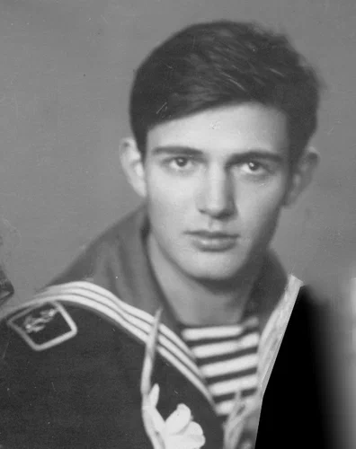

Вчера не стало старого моего друга Жени Бабуркина…
Познакомились мы с ним в гостинице Андреевского рынка в Ленинграде. Туда селили приезжих абитуриентов, поступающих в Военно-морское училище. В первую же ночь пошли к памятнику Крузенштерна просить покровительства в нашем стремлении стать военными моряками. Потом бродили всю ночь (хотя какие в июне в Ленинграде ночи) по набережным Невы, не веря, что все это теперь может стать нашим. Поступили, отправились служить на Северный флот – хрущевское нововведение для тех, кто захотел стать офицером. Когда поезд пришел в Мурманск – побежали к заливу пробовать воду – солона ли. Вода пахла нефтью…
Служил он на соседней лодке, но дружбе нашей это не было помехой. Вместе ходили в редкие увольнения, вместе бродили по сопкам Гремихи. А потом пять с половиной лет учебы, лучшие годы жизни. Годы заполненные не только лекциями и занятиями, не только первыми спусками под воду и первым прикосновением к ядерному реактору – но и веселыми приключениями, которыми так богата жизнь в этом возрасте. И надо добавить, что пойти куда-нибудь с Бабуркиным и не попасть в приключение было невозможно. В дождливую ленинградскую погоду, когда некуда было пойти – ехали в Александро-Невскую лавру, «смотреть, как Дельвиг плачет»: под струями дождя поэт и впрямь, казалось, заливался слезами… А потом ели блины и пили кофе в расположенной поблизости «стекляшке». Вместе женились, с разницей, правда, в два года, были друг у друга свидетелями на свадьбе. Вместе радовались первым сыновьям (Бабуркин не мог скрыть своей гордости: «У таких как мы, - говорил он, выпятив грудь, - сыновья рождаются»).
Вместе начинали и службу на атомном флоте. Но потом дороги наши разошлись. Он уехал в Ленинград, стал неплохим ученым в области морского оружия. Меня судьба бросила в другую сторону….
Встречались мы не чаще раза в два-три года, когда выпадал счастливый случай выбраться в Ленинград. Останавливались мы в его небольшой квартире. Каждая встреча была настоящим праздником. Вспоминали Новую Титовку, Гремиху, Западную Лицу… Он рассказывал о своих командировках на Новую Землю, на атомные полигоны…
Памятью он обладал необыкновенной. Мог не только цитировать страницами наших маринистов, старых и новых, но и дословно напоминал прежние наши разговоры, о которых я и думать забыл. Поначалу был страстным охотником, но потом как-то вдруг эта страсть у него прошла. «Рука больше не поднимается на божью тварь», - говорил он, объясняя такую перемену.
Работал он до последних дней своей жизни, так внезапно и так рано оборвавшейся. Земля ему пухом
.